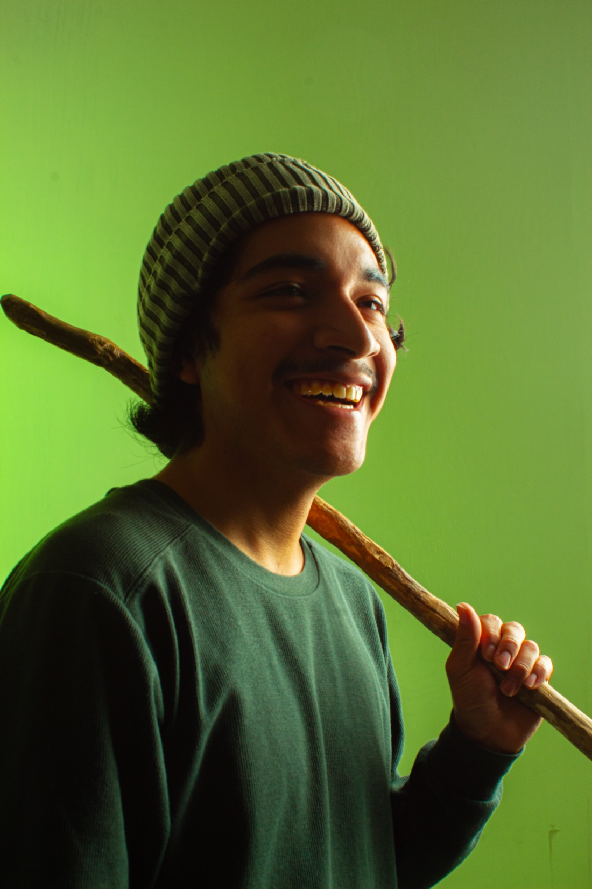
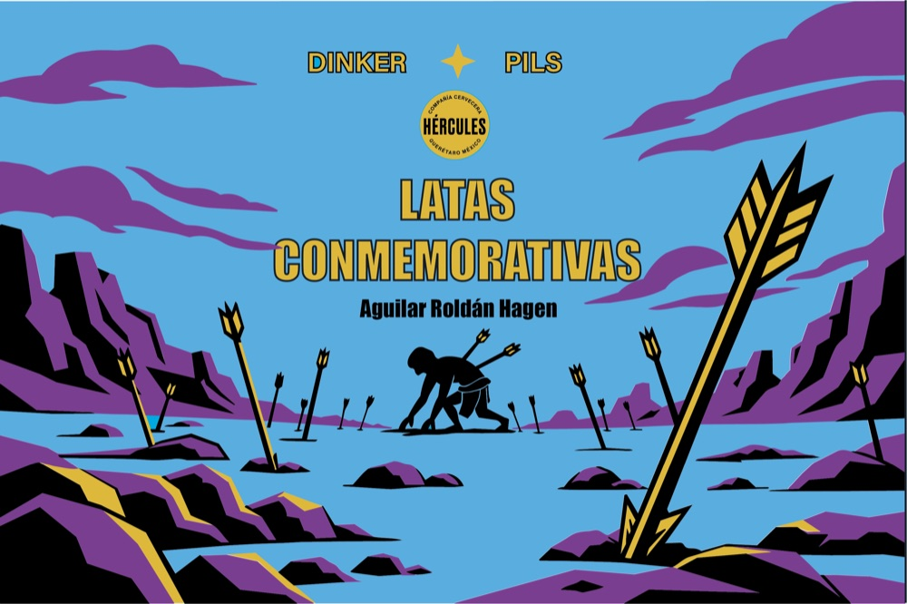

Portafolio · Ciudad de México
Hagen Aguilar Roldán
Diseñador gráfico y digital en formación
Diseño para estar al servicio de las personas y mejorar su entorno.

01 · Sobre mí
Sobre mí
Soy Hagen Aguilar Roldán, vivo en la Ciudad de México y actualmente me formo como diseñador gráfico y digital. Mi principal interés está en la animación, acompañado del modelado 3D, el diseño digital y la creación de propuestas visuales que combinen creatividad y funcionalidad. También me interesa la fotografía, la ilustración, viajar y explorar nuevos lugares, experiencias y formas de expresión
- Animación
- Modelado 3D
- Diseño digital
- Fotografía
- Ilustración
02 · Proyectos
Proyectos
Cuatro piezas entre editorial, empaque, fotografía y animación.



03 · Experiencia
Experiencia
En orden cronológico inverso: el puesto o reconocimiento, la institución, la fecha y la contribución.
-
Reconocimiento
Taller Vertical de Vinculación 2026 — Segundo lugar
Universidad La Salle México
Septiembre 2026
Participé en el desarrollo de una propuesta de aplicación y página web para Itaso MX, trabajando en la conceptualización, wireframes, pantallas y flujos de interacción para apoyar a cuidadores de niños en la comprensión de información alimentaria.
-
Reconocimiento
Premio A Diseño 2025 — Mención Plata en Empaque
Revista A Diseño
Julio 2026
Colaboré en el desarrollo creativo de una propuesta de empaque, la producción y postproducción de imágenes de producto y el refinamiento de ilustraciones para su presentación final.
-
Summer Work & Travel 2025
Universal Orlando Resort · Orlando, Estados Unidos
Mayo–agosto 2025
Trabajé en el área de alimentos y bebidas, realizando atención al visitante, preparación de pedidos y actividades operativas. Esta experiencia fortaleció mi comunicación, adaptación, colaboración y capacidad para trabajar bajo presión en un entorno internacional.
-
1.er Concurso de Playeras Estampando Ideas 2024
Universidad La Salle México
Mayo 2024
Desarrollé una propuesta gráfica a partir de la investigación y conceptualización visual, explorando composiciones, tipografías y técnicas de impresión textil para su aplicación sobre una prenda.
04 · Educación
Educación
Formación académica
Licenciatura en Diseño Gráfico y Digital
Universidad La Salle
Formación complementaria
Formación autodidacta
Aprendizaje complementario
05 · Habilidades
Habilidades
- Fotografía
- Producción fotográfica, composición, retoque y tratamiento de imagen.
- Idiomas
- Español nativo, inglés con competencia profesional y francés básico.
- Trabajo en equipo
- Colaboración, comunicación y adaptación en proyectos y entornos diversos.
- Herramientas Adobe
- Manejo de Illustrator, Photoshop, Camera Raw, Lightroom, After Effects e InDesign.
- Diseño de identidad
- Conceptualización visual y desarrollo de sistemas gráficos.
- Animación
- Interés y formación en animación y comunicación visual en movimiento.
- Modelado 3D
- Exploración de volúmenes, construcción de modelos y representación tridimensional.
- Ilustración
- Desarrollo de recursos gráficos y propuestas visuales.
06 · Contacto